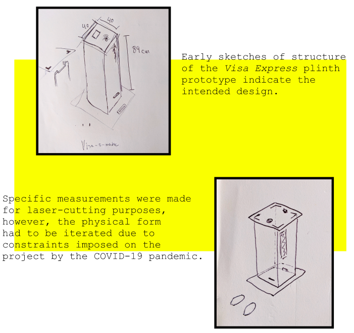
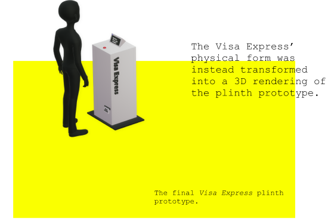
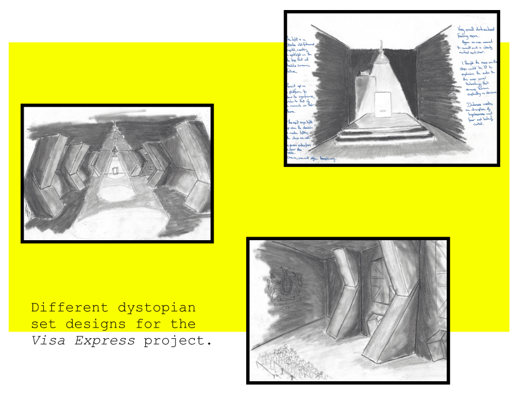
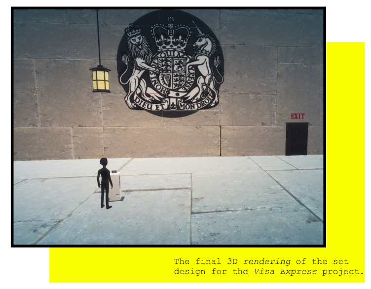
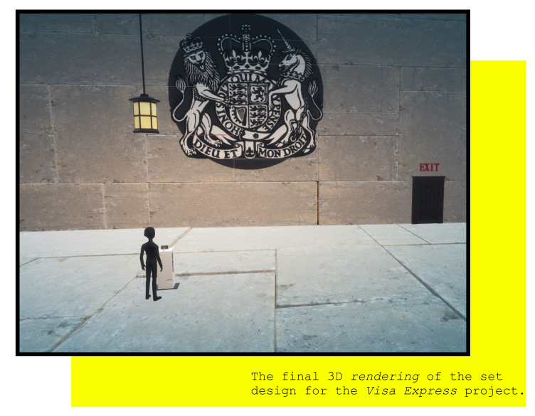

Visa Express:
Process
The Visa Express was the outcome of an iterative design process. Different ideas, forms and aesthetics were explored, however, the idea of having an interactive plinth prototype as the centrepiece was introduced early on in the design process.
Prototype Design
 Set Design
Different set design aesthetics were explored for the Visa Express project. It was chosen to for for a dystopian aesthetic as it would fit the narrative of the project the most.
 
